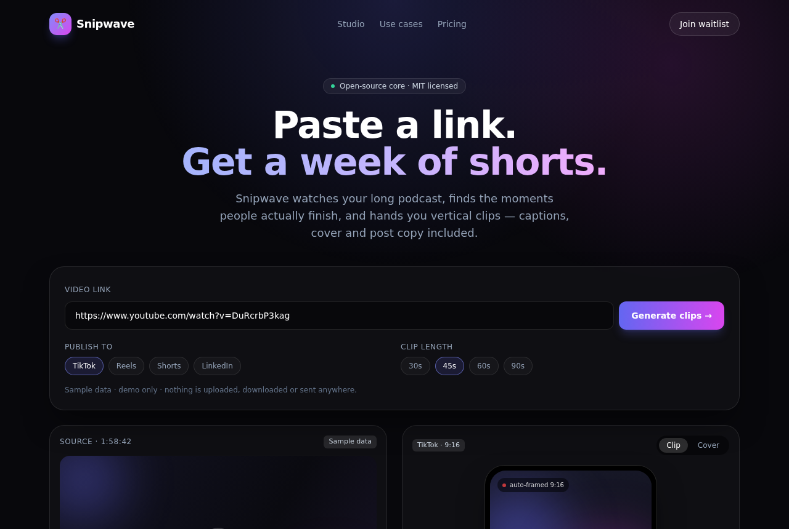

AutoClip: Open-source AI video clipper
zhouxiaoka/autoclip · Media & creativeMIT⭐ 11,822

What it is. AutoClip (zhouxiaoka/autoclip) is an MIT-licensed desktop app that takes a long video link — a podcast, interview, lecture, or course — and turns it into short vertical clips. Per the README, it renders locally on your machine and outputs the video, cover image, and posting copy, with targets for TikTok, Reels, YouTube Shorts, Douyin, Xiaohongshu, and Bilibili. There is also a CLI and an MCP endpoint, and you can open the editor when a cut needs fixing. The software is free; cloud models are billed per use.
Why it's taking off. The repo has around 11.8k stars and has been adding roughly 900 a day. The demo reel is the reason: real clips cut from Bill Gates, Tony Robbins, Sam Altman, and Andrew Garfield interviews, in both interview-style and full-screen podcast layouts. For anyone who already publishes long episodes and wants Shorts without a VA, that is a concrete before/after rather than a promise.
Where the product opportunity is. The obvious move is a hosted English version: paste a YouTube URL, pick the platform, and get a ready-to-post clip with captions and a cover in a few minutes, priced by minutes processed. The gap is real — clipping is a crowded category, and the core engine is open under MIT, so the differentiator has to be English-first output quality, editor UX, and publishing workflow rather than the model itself.
Caveats. The README and case library lean heavily on Chinese platforms and Chinese-language subtitles, so an English product needs new presets, caption styles, and copy. Cloud model calls are third-party and metered, and scraping platform video sits in ToS and copyright grey areas.
Today's top 5
| # | Repo | Buzz | Startup | Overall |
|---|---|---|---|---|
| 1 | zhouxiaoka/autoclip | 8.67 | 7.7 | 8.15 |
| 2 | Tracer-Cloud/opensre | 8.0 | 7.45 | 7.41 |
| 3 | wangzan101/Mika | 9.0 | 7.4 | 7.04 |
| 4 | toyxyz/toyxyz_RGBMocap | 7.67 | 6.3 | 7.03 |
| 5 | iamajmeena/neonclipping | 8.0 | 7.95 | 6.94 |